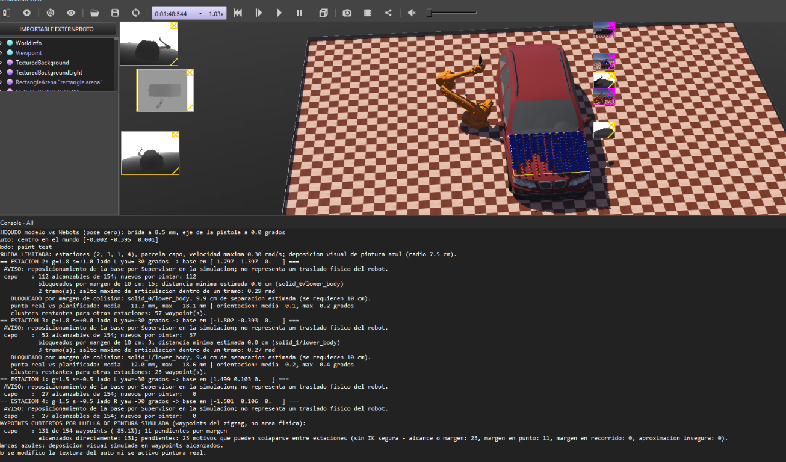

Short Technical Report
This project builds a software simulation of a basic automotive painting cell. It demonstrates an industrial manipulator with a spray-gun end-effector, a vehicle model, planned paths over exterior panels, inverse-kinematics-based motion, and conservative robot-to-vehicle clearance checks. The design follows the assessment's emphasis on demonstrating robotics fundamentals rather than delivering a production-ready paint line.
The current demonstration focuses on the hood. A successful simulation marker indicates that the nozzle reached a planned waypoint; it does not represent real paint, coating quality, or a fully painted physical surface.
The scene is implemented in Webots R2025a and uses an ABB IRB 4600-40 model. A BMW X5 model is positioned in a 12 m by 8 m arena. A simple spray-gun tool is attached to the robot hand. The controller runs in Python and uses IKPy for inverse kinematics and NumPy for geometric calculations.
The controller's vehicle coordinate frame places the origin at the vehicle center on the floor: x points toward the front, y toward the vehicle's left, and z upward. Candidate robot stations are defined relative to this frame. In the current demonstration, Webots Supervisor repositions the robot base between station poses instantly; this is a simulation convenience, not a modeled mobile base or a physical relocation path.

Figure 1. Captured Webots paint-test run. Blue marks are visual indicators of reached spray waypoints; they do not change the vehicle texture.
Captured result: 131 of 154 hood waypoints (85.1%) are covered by the simulated marker footprint. 23 remain uncovered; the console reports 11 point-clearance blocks. These are waypoint diagnostics, not a physical-area measurement.
The vehicle reference dimensions are approximately 4.8 m × 1.9 m × 1.6 m. Panel dimensions and pose are estimates calibrated against the scene and scan data; they are not a metrology-grade vehicle model.
The controller represents the hood, roof, and one side as planar or locally planar rectangular patches in the vehicle frame. The hood incorporates a downward slope; the roof is treated as horizontal. The model was refined using RGB-D range data from a fixed scan rig. The scan tools capture camera images and depth data, then apply color/depth masks to estimate the vehicle surface. This supports geometric calibration, but does not provide a complete CAD reconstruction.
For each patch, a raster generator creates alternating zigzag passes. The nozzle is offset from the surface by a nominal 0.25 m standoff and oriented approximately normal to the panel. The current raster uses 0.15 m between passes and 0.08 m between samples along a pass. The hood path contains 154 waypoints in the reported run.
IKPy computes joint configurations for each target nozzle pose, using the prior solution as a seed to encourage continuity. The planner applies position and orientation tolerances before considering a target reachable. During the limited paint test, each selected pose is sent to the Webots motors at no more than 0.30 rad/s. The controller checks the actual nozzle pose against the target and skips points that fail to reach safely or within the configured timeout.
In paint_test mode, reaching a waypoint adds a blue cylinder-like visual mark with a configured 7.5 cm coverage radius. A surface waypoint is counted as covered when it lies within that radius of a reached mark. This footprint model reduces duplicate passes in later station attempts, but it is only a simplified visual coverage estimate; it does not simulate atomization, spray distribution, or paint deposition.
Robot collision volumes are loaded from supported box colliders in the exported URDF and transformed using forward kinematics. The vehicle is represented by a union of approximate boxes for the lower body, hood, cabin, roof, bumpers, and wheels. A separating-axis clearance calculation checks robot volumes against those boxes. The controller applies a minimum 0.10 m clearance and checks not only target poses but also interpolated joint-space motion, approach, and retreat paths.
The current paint-test speed is intentionally limited. Webots contact tracking is also enabled, and detected contact causes a stop. No physical paint actuator is activated.
The captured run used the hood patch and station sequence 2, 3, 1, and 4. It reports coverage by the simulated marker footprint, not painted area.
| Measure | Observed result | Meaning |
|---|---|---|
| Hood path samples | 154 | Waypoints in the raster trajectory. |
| Covered by simulated footprint | 131 / 154 (85.1%) | Waypoints within 7.5 cm of a reached visual mark. |
| Remaining uncovered | 23 / 154 (14.9%) | Points not covered by the simulated footprint at the end of the run. |
| Point-clearance diagnostic | 11 points | Reported as blocked by the 10 cm margin; diagnostic categories can overlap. |
This is a partial demonstration rather than complete hood coverage. IK and collision filters may reject targets; the motion is also deliberately conservative. The roof and side are represented in the model but are not validated by this captured run. The result should not be described as a fully painted vehicle.
Focused automated tests for the cell model and collision checker passed (17 tests). They cover patch geometry, station transforms, footprint coverage, IK candidate selection, and clearance behavior. Python bytecode compilation also succeeded. A repository-wide test discovery is not fully clean: the exploratory test_reach_study.py tries to import functions that are not exported by reach_study.py, and that module starts a lengthy reach study on import. This issue is separate from the focused controller and collision tests.
The Webots console and screenshot provide evidence for the described hood run. No independent repeatability study, quantitative area measurement, paint-quality analysis, or physical deployment test was performed.
Conclusion: the project demonstrates a Webots automotive cell, raster trajectory planning, IK-driven robot motion, basic collision-clearance checks, and visual evidence of partial hood coverage. It is an educational prototype and is not represented as a complete industrial painting solution.